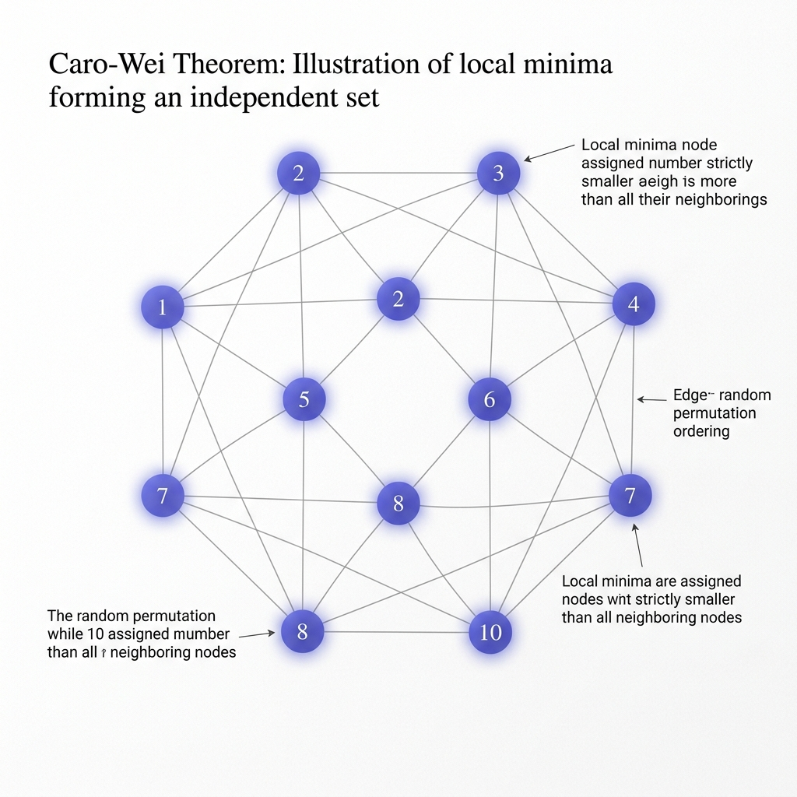

Caro–Wei Theorem

Mathematical Exposition
The Caro–Wei Theorem provides a fundamental lower bound on the independence number $\alpha(G)$ of a simple graph $G = (V, E)$ in terms of the degrees of its vertices:
$$ \sum_{v \in V} \frac{1}{d(v) + 1} \le \alpha(G) $$Where $d(v)$ is the degree of vertex $v$. This bound is tight for unions of complete graphs. The theorem is a generalization of Turán's Theorem and is a classic showcase of the probabilistic method in combinatorics.
Proof Strategy
The proof relies on averaging over random vertex orderings. Let $\pi: V \to \{1, 2, \dots, |V|\}$ be a uniformly chosen random permutation of the vertices. We select vertices that appear before all of their neighbors:
$$ S = \{ v \in V \mid \forall w \in N(v), \pi(v) < \pi(w) \} $$We prove two key facts:
- $S$ is an independent set: Adjacent vertices cannot both be local minima (one must be smaller).
- Expected size of $S$: The probability that $v$ has the smallest value in its closed neighborhood is $1 / (d(v) + 1)$. By linearity, $E[|S|] = \sum_{v \in V} \frac{1}{d(v)+1}$.
Since any independent set has size at most $\alpha(G)$, the expected size satisfies $E[|S|] \le \alpha(G)$, completing the proof.
import Mathlib
open Finset SimpleGraph Equiv
/-- **Caro–Wei Theorem.** The independence number of a simple graph is at least
`∑ v, 1 / (d(v) + 1)`. Proof by averaging over all vertex orderings. -/
theorem indepNum_ge_sum_inv_degree_add_one {V : Type*} [Fintype V] [DecidableEq V]
(G : SimpleGraph V) [DecidableRel G.Adj] :
(∑ v, (1 : ℚ) / (G.degree v + 1)) ≤ G.indepNum := by
let B := V ≃ Fin (Fintype.card V)
rcases isEmpty_or_nonempty V with hV | hV
· simp [Fintype.sum_empty, Nat.cast_nonneg]
· let S (b : B) : Finset V :=
univ.filter fun v => ∀ w ∈ G.neighborFinset v, b v < b w
-- Each S b is independent: two adjacent vertices can't both be local minima.
have hS_indep : ∀ b, G.IsIndepSet (S b : Set V) := by
intro b u hu v hv _ hadj
rw [mem_coe, mem_filter] at hu hv
exact absurd (hu.2 v (by simpa using hadj))
(not_lt.mpr (hv.2 u (by simpa using G.symm hadj)).le)
-- ∑_b |S b| ≤ |B| · α(G)
have h_sum_bound : (∑ b : B, ((S b).card : ℚ)) ≤ (Fintype.card B : ℚ) * G.indepNum :=
(sum_le_sum fun b _ => Nat.cast_le.mpr (hS_indep b).card_le_indepNum).trans
(by simp [sum_const, nsmul_eq_mul, Finset.card_univ])
-- Fubini: swap the double sum
let P (v : V) (b : B) : Prop := ∀ w ∈ G.neighborFinset v, b v < b w
have h_sum_eq : ∑ b : B, ((S b).card : ℚ) =
∑ v : V, ∑ b : B, if P v b then (1 : ℚ) else 0 := by
rw [← sum_comm]; congr 1; ext b
change ((univ.filter (fun v => P v b)).card : ℚ) = _
rw [card_filter]; push_cast; rfl
-- Core counting: |{b : P v b}| = |B| / (d(v) + 1)
have h_count : ∀ v : V, (∑ b : B, if P v b then (1 : ℚ) else 0) =
(Fintype.card B : ℚ) / (G.degree v + 1) := by
intro v
let T := insert v (G.neighborFinset v)
have hT_card : T.card = G.degree v + 1 := card_insert_of_not_mem (by simp)
-- C x = {orderings where x achieves the T-minimum}
let C (x : V) : Finset B := univ.filter fun b => ∀ y ∈ T, b x ≤ b y
-- The C x are disjoint (by injectivity of b)
have h_disj : (T : Set V).PairwiseDisjoint C := by
intro x _ y _ hneq
rw [Function.onFun, disjoint_left]
intro σ hσx hσy
simp only [C, mem_filter] at hσx hσy
exact hneq (σ.injective (le_antisymm (hσx.2 y ‹_›) (hσy.2 x ‹_›)))
-- ⋃ C x = B: every ordering has a T-minimum
have h_sum_C : ∑ x ∈ T, (C x).card = Fintype.card B := by
rw [← card_biUnion h_disj]; congr 1
ext σ; simp only [mem_biUnion, Finset.mem_univ, iff_true]
obtain ⟨x, hx, hxeq⟩ := mem_image.mp
(min'_mem (T.image σ) (Nonempty.image (insert_nonempty _ _) σ))
exact ⟨x, hx, by
simp only [C, mem_filter, Finset.mem_univ, true_and]
exact fun y hy => hxeq ▸ min'_le _ (σ y) (mem_image_of_mem σ hy)⟩
-- |C x| = |C v| for all x ∈ T, via precomposition with swap(v, x)
have h_symm : ∀ x ∈ T, (C x).card = (C v).card := by
intro x hx
have swap_stable {y : V} (hy : y ∈ T) : swap v x y ∈ T := by
rcases eq_or_ne y v with rfl | h1
· rw [swap_apply_left]; exact hx
· rcases eq_or_ne y x with rfl | h2
· rw [swap_apply_right]; exact mem_insert_self _ _
· rwa [swap_apply_of_ne_of_ne h1 h2]
have swap_map {a : V} (_ : a ∈ T) (σ : B) (hσ : σ ∈ C a) :
(swap v x).trans σ ∈ C (swap v x a) := by
simp only [C, mem_filter, Finset.mem_univ, true_and] at hσ ⊢
intro y hy
show σ (swap v x (swap v x a)) ≤ σ (swap v x y)
rw [swap_apply_self]; exact hσ _ (swap_stable hy)
have hfwd σ (hσ : σ ∈ C x) : (swap v x).trans σ ∈ C v := by
have := swap_map hx σ hσ; rwa [swap_apply_right] at this
have hbwd σ (hσ : σ ∈ C v) : (swap v x).trans σ ∈ C x := by
have := swap_map (mem_insert_self v _) σ hσ; rwa [swap_apply_left] at this
have hinv (σ : B) : (swap v x).trans ((swap v x).trans σ) = σ := by
simp [← trans_assoc, swap_swap]
exact card_eq_of_equiv {
toFun := fun ⟨σ, hσ⟩ => ⟨_, hfwd σ hσ⟩
invFun := fun ⟨σ, hσ⟩ => ⟨_, hbwd σ hσ⟩
left_inv := fun ⟨σ, _⟩ => Subtype.ext (hinv σ)
right_inv := fun ⟨σ, _⟩ => Subtype.ext (hinv σ) }
-- P v b ↔ b ∈ C v
have hPv : ∀ b, P v b ↔ b ∈ C v := by
intro b; simp only [P, C, mem_filter, Finset.mem_univ, true_and]
exact ⟨fun h y hy => by
rcases mem_insert.mp hy with rfl | hy
· exact le_rfl
· exact (h y hy).le,
fun h y hy => lt_of_le_of_ne (h y (mem_insert_of_mem hy)) fun heq =>
absurd ((mem_neighborFinset ..).mp hy)
(by rw [b.injective heq]; exact G.loopless y)⟩
-- ∑ if P v b then 1 else 0 = |C v|
have h_sum_Cv : (∑ b : B, if P v b then (1 : ℚ) else 0) = (C v).card := by
rw [← sum_filter]
convert_to ∑ _x ∈ C v, (1 : ℚ) = _
· congr 1; ext b; simp [hPv]
· simp [sum_const, nsmul_eq_mul]
-- |T| · |C v| = |B|, so |C v| = |B| / (d(v) + 1)
have h_card : T.card * (C v).card = Fintype.card B := by
calc T.card * (C v).card
= ∑ x ∈ T, (C v).card := by rw [sum_const]; simp [smul_eq_mul]
_ = ∑ x ∈ T, (C x).card := sum_congr rfl fun x hx => (h_symm x hx).symm
_ = Fintype.card B := h_sum_C
rw [h_sum_Cv]
have h_pos : (↑(G.degree v) + 1 : ℚ) ≠ 0 := by positivity
exact (eq_div_iff_mul_eq h_pos).mpr
(by exact_mod_cast (mul_comm (G.degree v + 1) _ ▸ (hT_card ▸ h_card)))
-- Combine: ∑ |S b| = |B| · ∑ 1/(d+1), then cancel |B|
have h_sum_sub : (∑ b : B, ↑((S b).card) : ℚ) =
↑(Fintype.card B) * ∑ v : V, (1 : ℚ) / (↑(G.degree v) + 1) := by
rw [h_sum_eq]
have : (∑ v : V, ∑ b : B, if P v b then (1 : ℚ) else 0) =
∑ v : V, ↑(Fintype.card B) * ((1 : ℚ) / (↑(G.degree v) + 1)) :=
sum_congr rfl fun v _ => by rw [h_count v]; ring
rw [this, ← mul_sum]
rw [h_sum_sub] at h_sum_bound
exact (mul_le_mul_left (Nat.cast_pos.mpr
(Fintype.card_pos_iff.mpr ⟨Fintype.equivFin V⟩))).mp h_sum_bound